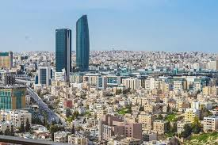

مدينتي(عمان)
- تعود أقدم معالم الحضارات الإنسانية في عمّان، المكتشفة في موقع عين غزال شرق المدينة
إلى الالف السابع قبل الميلاد، ومع بداية العصور الحجرية الحديثة
في مطالع الالفية الرابعة قبل الميلاد، اشاد الإنسان القديم
في عمان عمائره الكبيرة من ابراج وصوامع ونصب، تدل عليها بقايا آثارها المتناثرة في اطراف عمان إلى اليوم. وقد تعاقبت عليها الشعوب والقبائل القديمة، وتركت آثارها فيها
وتشير الشواهد إلى ان العمونيين انشأوا مملكتهم في عمان
في الالف الثالث قبل الميلاد، واسموها (ربة عمون)، أي (دار ملك – عمون)
والتي تحولت فيما بعد إلى (عمون) فـ (عمّان). كما احتلها الآشوريون ثم البابليون
إلى ان وقعت تحت السيطرة اليونانية، في القرن الرابع قبل الميلاد. ثم احتلها (بطليموس فيلادلفوس)، في اواخر القرن الثالث قبل الميلاد، الذي
اقام مدينة جديدة على انقاض المدينة القديمة، ومنحها اسماً مشتقاً من اسمه (فيلادلفيا)، ويعني (مدينة الحب الاخوي). - تقع المدينة في وسط المملكة على دائرة عرض 31 شمالاً وخط طول 35 شرقًا في منطقة تكثر فيها الجبال
فنشأت في الوديان بين الجبال أولاً فضاقت على سكانها
فارتقوا سفوحها واستمروا في الاتساع عبر قممها حتى انتشرت المدينة بأطرافها فوق 20 جبلا - تُعتبر عمّان المركز التجاري والإداري للأردن وقلبه الاقتصادي والتعليمي
حيث أصبحت عمّان نقطة استقطاب للكثير من الجاليات العربية لموقعها المتميز ولعمارتها المعاصرة
كما تستقطب عمّان الكثير من السياح سنويًا من أوروبا الغربية وأمريكا الشمالية واليابان وإستراليا ومن الدول العربية المجاورة والقريبة
وكثيرًا من عائلات دول الخليج العربي تحديدًا إذ تكثر بها المعالم السياحية عمومًا والعلاجية الطبية خصوصاً
كان من نتيجة وقوع عمّان في مثل هذا الموقع الاستراتيجي في بلاد الشام والشرق الأوسط
أن أصبح موقعها يتحكم بالاقتصاد الوطني ويُحرّك 90% من الاستثمار على المستوى الوطني
.jpeg)
عمان

عمان
.jpeg)
عمان
المدرج الروماني
قلعة عمان
ما يعجبني في مدينتي عمان التنوع الثقافي واختلاف الجنسيات والتعاون بينهم